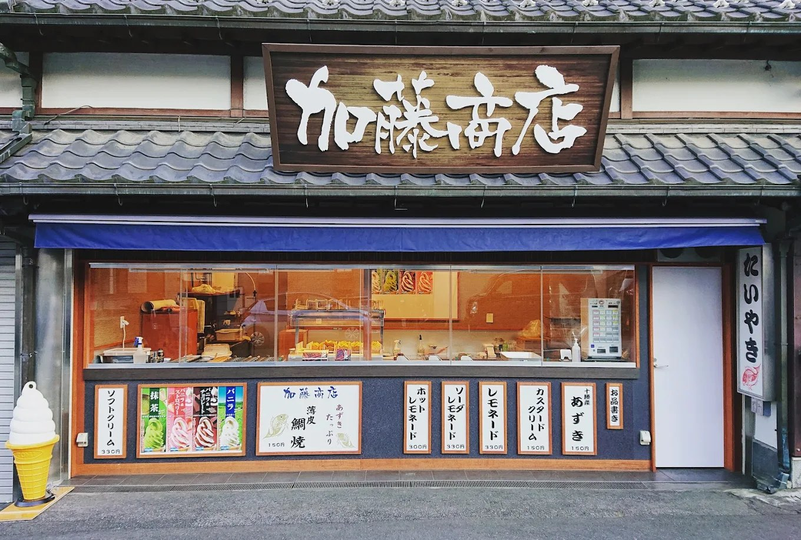
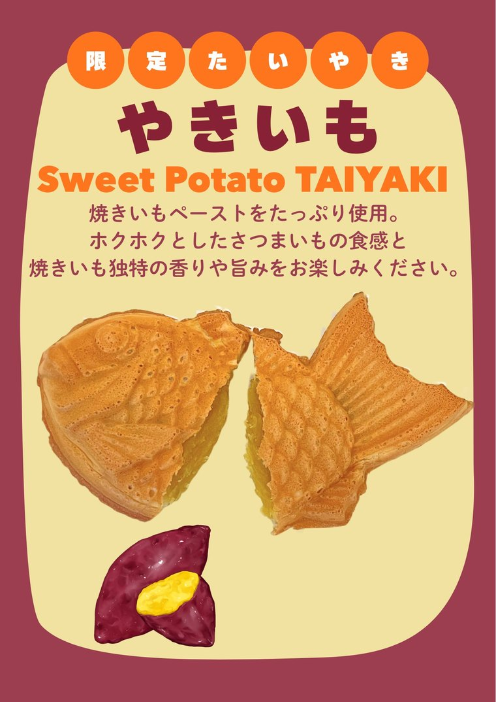
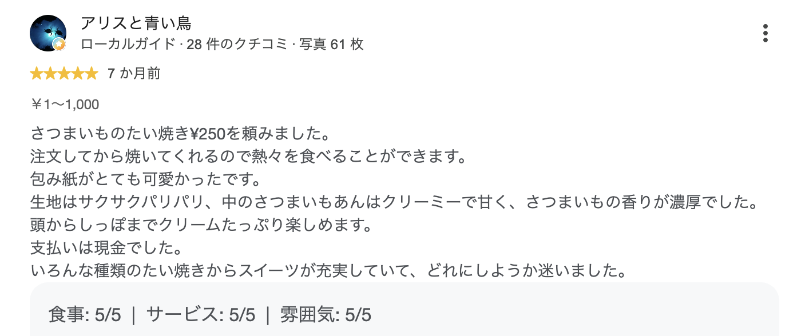
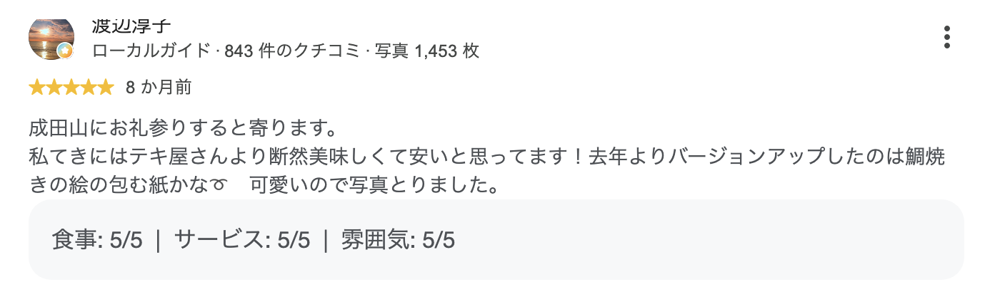
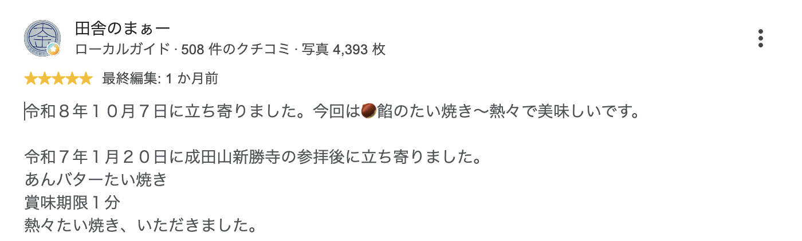

二つの看板
TAIYAKI & AMAGURI
加藤商店は、成田山の門前でたい焼きと天津甘栗を商う店です。食べ歩きにはたい焼きを、お土産には甘栗を。一度のお立ち寄りで両方お求めいただけます。

TAIYAKI & AMAGURI
加藤商店は、成田山の門前でたい焼きと天津甘栗を商う店です。食べ歩きにはたい焼きを、お土産には甘栗を。一度のお立ち寄りで両方お求めいただけます。
SEASONAL

北海道産のえびすかぼちゃをたっぷり使用。なめらかな食感と濃厚な旨みをお楽しみください。

焼きいもペーストをたっぷり使用。ホクホクとしたさつまいもの食感と焼きいも独特の香りや旨みをお楽しみください。

白あんベースのあんにカットした甘栗がゴロゴロ入った人気のたい焼きです。

福岡県産あまおうを使用。いちごの甘酸っぱさとミルクの甘さのバランスにこだわったクリームです。
店頭に貼っているポップを、そのまま掲載しています。限定たい焼きは季節によって変わります。
VOICE






Googleマップに投稿されたクチコミを、そのまま掲載しています。横に送ってご覧いただけます。

「スタッフ管理のアカウント始めました！おすすめ商品やイベント情報を投稿していきますので、是非、フォローお願いします！」
@kato_syoten.505
Instagramで見る・フォローするACCESS